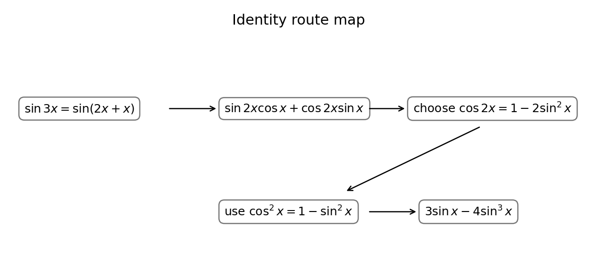

3. (a) Show that
$$\sin3x=3\sin x-4\sin^3x.$$
(4)
[4 marks]
Start from the left and split $3x=2x+x$:
$$\sin3x=\sin(2x+x).$$
Using $\sin(A+B)=\sin A\cos B+\cos A\sin B$:
$$\sin3x=\sin2x\cos x+\cos2x\sin x.$$
Strategy. To prove $\sin3x=3\sin x-4\sin^3x$ we start from the left and split the angle as $3x=2x+x$, so the compound-angle formula can convert one hard term into combinations of $2x$ and $x$, which we already know how to expand.
Definition in play. The addition formula $\sin(A+B)=\sin A\cos B+\cos A\sin B$ with $A=2x,\ B=x$ gives $\sin3x=\sin2x\cos x+\cos2x\sin x$; this is the pivot that opens the whole proof.
Intermediate logic. Splitting as $2x+x$ (rather than $x+x+x$) is deliberate: it lets us reuse the double-angle identities in the next step, turning everything into sines and cosines of the single angle $x$, which is what the target demands.
Presentation. Begin “LHS $=\sin(2x+x)$” and quote the addition formula explicitly before substituting. Transfer cue: to expand any $\sin(nx)$ or $\cos(nx)$, split the multiple angle into a known double plus a single and apply the compound-angle formula first.
Why split as $2x+x$. The choice is strategic: it lets the next step deploy double-angle identities, converting everything to functions of the single angle $x$ that the target requires. Splitting as $x+x+x$ would demand a triple application and is far messier. Quoting the addition formula explicitly before substituting secures the opening method mark.
Recall the double-angle identities:
$$\sin2A=2\sin A\cos A,$$
$$\cos2A=\cos^2A-\sin^2A=2\cos^2A-1=1-2\sin^2A.$$
Choose $\cos2x=1-2\sin^2x$ because the target contains only powers of sine.
Choosing the right double-angle forms. We now replace $\sin2x$ and $\cos2x$; the key decision is which of the three $\cos2x$ forms to use, and we pick the one that produces only sines to match the target’s $\sin x$ and $\sin^3x$.
Definition in play. $\sin2A=2\sin A\cos A$ and $\cos2A=1-2\sin^2A$ (the sine-only version, chosen over $2\cos^2A-1$ or $\cos^2A-\sin^2A$). Selecting the identity that matches the goal is a strategic move, not an arbitrary one.
Intermediate logic. The double-angle identities are themselves special cases of the addition formula with $A=B$, so the whole proof rests on one master formula applied twice; forgetting the factor $2$ in $\sin2A$ is the classic error that derails the algebra.
Presentation. Write out both chosen identities before substituting, so the examiner sees the deliberate selection for method credit. Transfer cue: when a target is expressed purely in one trig function, pick the double-angle form that eliminates the other function, keeping later simplification linear.
Substitute:
$$\sin3x=(2\sin x\cos x)\cos x+(1-2\sin^2x)\sin x$$
$$=2\sin x\cos^2x+\sin x-2\sin^3x.$$
Now $\cos^2x=1-\sin^2x$.
Substitution stage. Insert the chosen identities into $\sin2x\cos x+\cos2x\sin x$; the goal is to reach an expression in $\sin x$ and $\cos^2x$ that a single Pythagorean swap will finish.
Intermediate logic. Substituting gives $(2\sin x\cos x)\cos x+(1-2\sin^2x)\sin x=2\sin x\cos^2x+\sin x-2\sin^3x$. The first product creates a $\cos^2x$ term, which is exactly what the identity $\cos^2x=1-\sin^2x$ will convert into sines only.
Definition in play. The Pythagorean identity $\sin^2x+\cos^2x=1$, rearranged to $\cos^2x=1-\sin^2x$, is the bridge from mixed functions to a pure sine expression, matching the required right-hand side.
Presentation. Expand fully and keep terms grouped so the pending $\cos^2x$ substitution is obvious; this line typically carries the A1. Transfer cue: after applying double-angle formulae, look for a lone $\cos^2$ or $\sin^2$ and clear it with the Pythagorean identity to reach a single-function target.
Bridging identity. The lone $\cos^2x$ produced by $\sin2x\cos x$ is the obstacle; the Pythagorean identity $\cos^2x=1-\sin^2x$ is the bridge that converts it into sines only, matching the target's pure-sine form. Expanding fully and grouping terms so this substitution is visible is what earns the accuracy mark on this line.
Transfer cue. After double-angle substitution, hunt for a stray squared term and clear it with the Pythagorean relation.
Therefore
$$\sin3x=2\sin x(1-\sin^2x)+\sin x-2\sin^3x$$
$$=2\sin x-2\sin^3x+\sin x-2\sin^3x$$
$$=3\sin x-4\sin^3x.$$

Final simplification. Replace $\cos^2x$ with $1-\sin^2x$ and collect like terms; the algebra should collapse neatly onto the printed target, which is the signal the proof is complete.
Intermediate logic. $2\sin x(1-\sin^2x)+\sin x-2\sin^3x=2\sin x-2\sin^3x+\sin x-2\sin^3x=3\sin x-4\sin^3x$; the two $\sin x$ terms add to $3\sin x$ and the two $-2\sin^3x$ terms add to $-4\sin^3x$, exactly matching the goal.
Why the check convinces. Testing $x=\pi/6$ gives $\sin(\pi/2)=1$ on the left and $3(\tfrac12)-4(\tfrac18)=\tfrac32-\tfrac12=1$ on the right, a quick numerical confirmation that the identity is not just algebraically plausible but correct.
Presentation. Show the collection of like terms explicitly and end with “$=$ RHS, as required” to signal a finished proof. Transfer cue: conclude any “show that” identity by matching the target term-by-term and, if time allows, verify at one convenient angle to catch sign or coefficient slips.
Collecting to the target. After substituting $\cos^2x=1-\sin^2x$, the two $\sin x$ terms combine to $3\sin x$ and the two $-2\sin^3x$ terms combine to $-4\sin^3x$, landing exactly on the printed right-hand side. End with "= RHS, as required" to signal a completed proof.